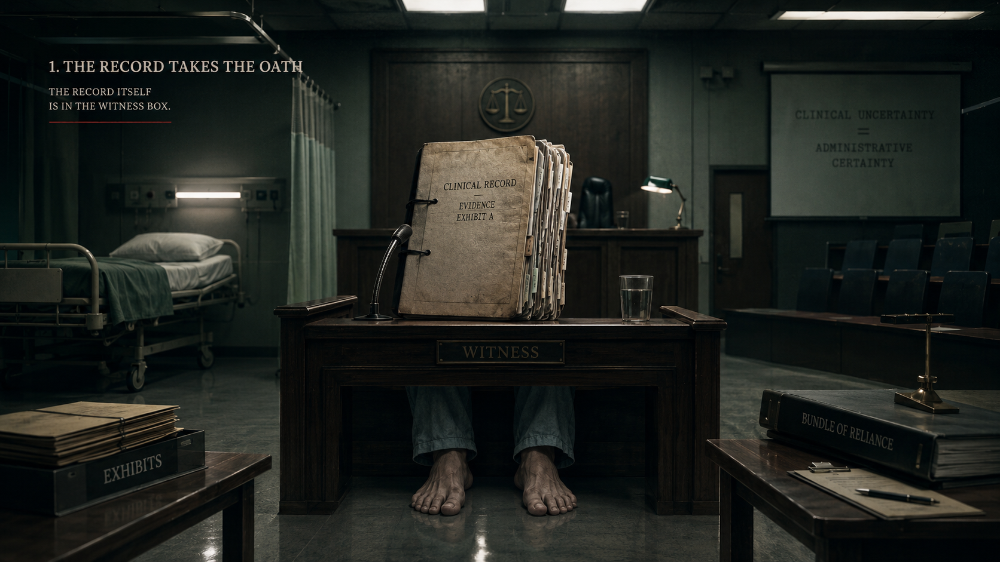
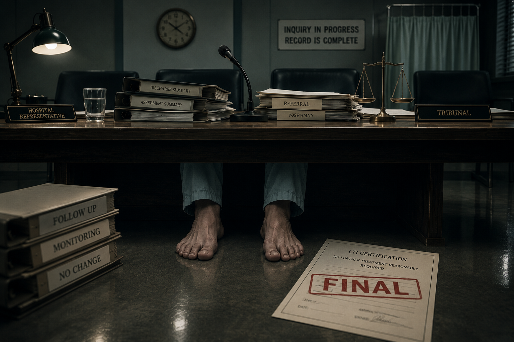
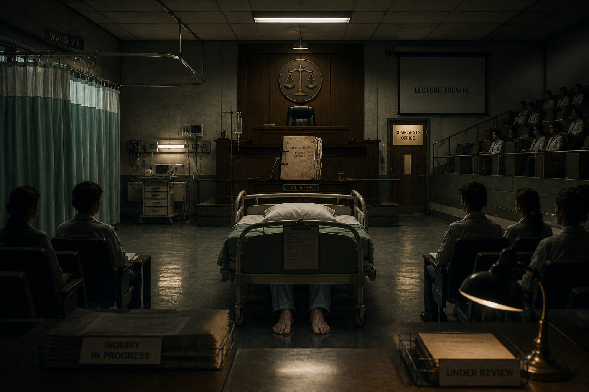
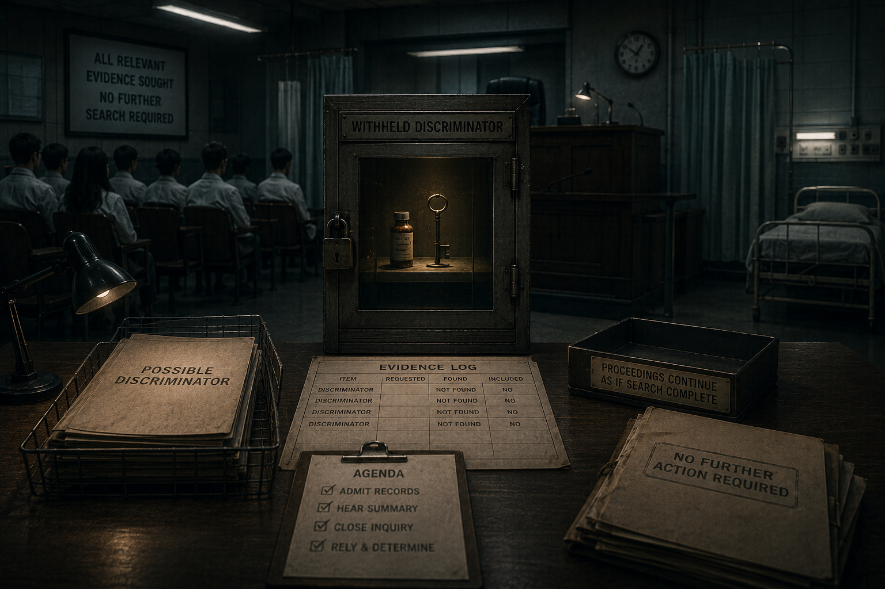
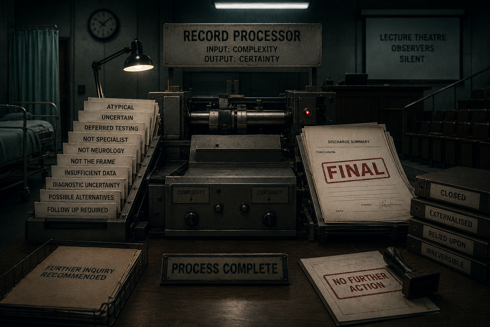
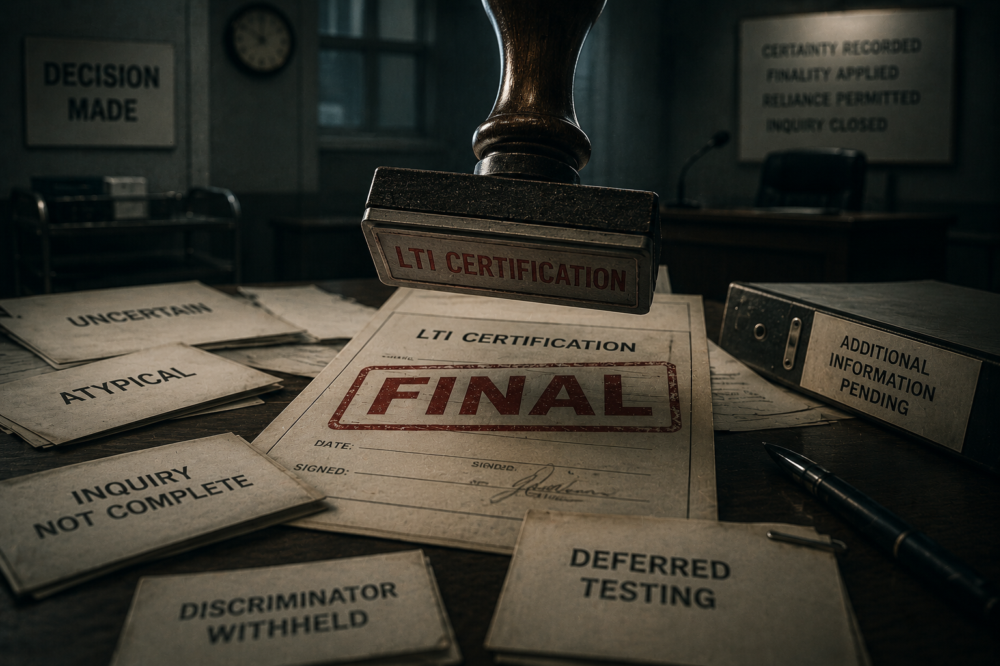
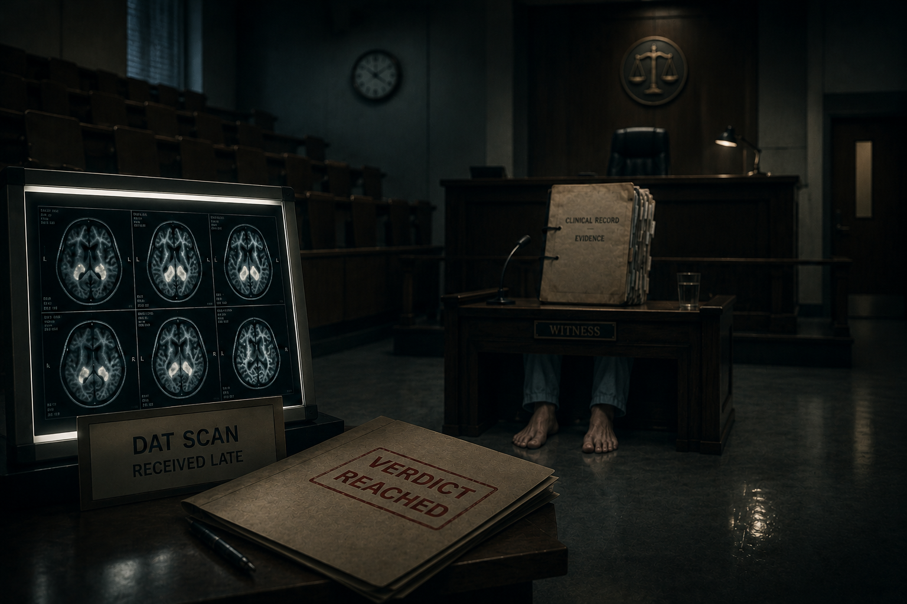
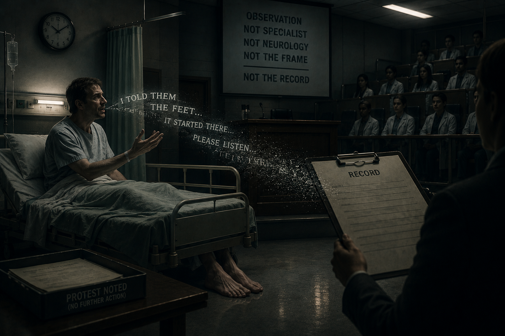
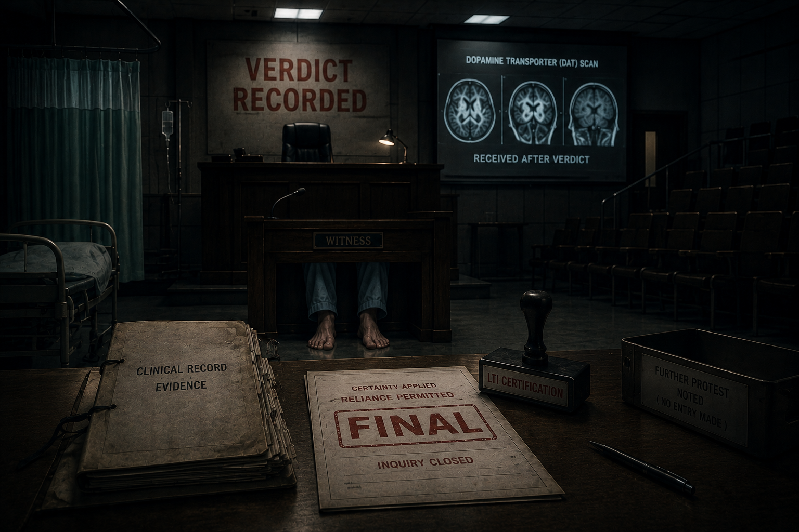

Every night, the same court assembled inside him, because no court outside him had yet required the record to take the oath.
The room that kept changing
It was never quite a courtroom at first. That was part of the dream’s design. It refused to give him a single jurisdiction. Some nights it began as a ward: a narrow bed under fluorescent panels, green curtains half drawn, a trolley beside him, institutional polish on the floor, a body waiting to be explained. Other nights it began as a tribunal chamber: dark wood, a raised bench, a microphone, empty chairs, a witness box waiting beneath the coldest light in the room. Sometimes it was a lecture theatre, with students seated in tiers and silence arranged as though it were evidence.
Then the room settled. The bed remained at the left of the court. The judge’s bench rose at the back. The lecture theatre remained in shadow. The complaints office appeared as a door that was always closed but always lit. On the table lay referrals, summaries, forms, scans, letters, apologies, internal responses, and records that had learned how to survive review.
In the witness box there was no doctor.
There was a file.

The file was thick, upright, and almost proud. It had dates. It had stamps. It had careful phrases and long explanations. It had disclaimers, impressions, plans, addenda, referrals, and later apologies. It had everything except the one thing a record must have if it wishes to govern a life: the right order.
The oath was administered without ceremony. The file did not raise a hand. Paper has no hand. It simply remained where it had always been, in the place of the witness, waiting to be believed.
The first question
The advocate never shouted. Rage had no evidential value. The file could survive rage. Institutions are practised in surviving rage. Rage can be softened, absorbed, described as distress, routed into experience, and left there. The dream knew this. So the advocate spoke quietly.
If final, why uncertain? If uncertain, why certified?
That was always where the dream began, because every later question lived inside that one. The institution needed uncertainty when defending the difficulty of the clinical task. It needed certainty when defending the administrative acts that followed. It needed the record to be detailed enough to prove diligence, but not binding enough to constrain what could later be said about the meaning of that diligence.
The file did not lie in the ordinary way. It did something more durable. It recorded incompleteness and performed completion. It preserved warning signs while denying them power over the conclusion. It let uncertainty remain in the prose and removed it from the sequence.
The advocate placed two bundles before the witness box. One was marked clinical uncertainty. The other was marked administrative reliance. The first contained atypicality, deferred testing, unresolved feet, possible alternatives, and the language of caution. The second contained discharge, certification, pathway, diagnosis, follow-up, and reliance. The court did not need to choose which bundle was real. Both were real. That was the problem.
The judge leaned forward. The advocate repeated the question, not louder, only slower.
If the record was final enough to certify, why was it uncertain enough to defend? If it was uncertain enough to defend, why was it final enough to govern?
The referral is called
The first witness was not the discharge summary. It was the referral.
It entered without drama. A GP letter. Ordinary. Administrative. The kind of document produced every day by a health system trying to move a person from one room to another before their life collapses under the weight of symptoms. Yet in the dream the referral had an authority no later document could quite erase, because it carried the case into the institution before the institution had rewritten it.
The advocate opened it carefully.
There was the unusual gait. There was the stiffness. There was difficulty initiating movement. There was the fear that employment was becoming impossible. And there, before the abstractions hardened, were the feet: callouses, corns, bilateral foot issues, feet not in a good state, the bodily place from which the case entered medicine.
The advocate turned to the file.
Question: Did the case enter as an abstract diagnostic puzzle?
Answer: No. It entered through gait, function, and the feet.
Question: Did the GP assert Parkinson’s disease?
Answer: No. The GP queried a neurological problem and preserved openness.
Question: Once the hospital accepted the referral, what had to be answered?
Answer: Why this person could not walk properly, given what was happening in his feet.
The referral did not accuse anyone. It did not need to. It defined the duty. Everything later had to pass back through that door.
The feet beneath the table
Then, as always, the room rearranged itself around the feet.
They were visible beneath the table: human, exposed, vulnerable, and central. In one version of the dream they were under the hospital bed. In another they were beneath a complaints desk. In another they appeared under the tribunal bench itself, as if the whole institution had been built above them without ever quite concealing them.
The room changed its name around them. Neurology. Podiatry. Complaint. Governance. Data. Risk. Review. But the feet did not move.

They had brought the case in. Before the abstractions, before the diagnostic label, before the machinery of finality, there had been a body trying to walk and failing through pain, posture, stiffness, and gait. The receiving institution was not asked to solve an abstract classification problem. It was asked to explain why this person could not walk properly, given what was happening in his feet.
In the dream, this mattered because the feet were not missing from the record. A missing fact is one kind of failure. A present fact denied governing force is another. The feet were noticed, described, referred, medicated, explained around, and returned to. They were visible enough to be managed, but not authoritative enough to govern the frame.
Question: If the feet were peripheral, why did they remain central?
Question: If they were central, why were they sent elsewhere?
Question: If the pain was separate, why was it responsive?
Question: If it was responsive, why was it treated as peripheral?
A symptom can be discussed forever without ever being allowed to govern.
The ward becomes the court
In the next version of the dream, the bed was wheeled into the centre. The ward curtain became a bar of the court. The lecture theatre filled with silent observers. The file remained in the witness box, and the patient lay at the intersection of all jurisdictions. Care, teaching, complaint, evidence, and judgment occupied the same room.

The dream understood something that ordinary chronology often conceals: the patient was not merely treated in a hospital. He was converted into a record under observation. His body supplied facts. The institution supplied order. When the two diverged, the institution’s order prevailed.
The deepest asymmetry was not intelligence. It was grammar. The institution had the language of sequence, falsifier, certification, scope, and reliance. The patient had pain, gait, protest, and memory. He could say that the thing that brought him in had not been answered. He could not yet say that the principal discriminator had been withheld while finality proceeded.
That ignorance was not weakness. It was the condition that made closure possible.
The translation
The advocate then performed the most delicate part of the cross-examination. He did not accuse the file of losing the feet entirely. He accused it of translating them into a language in which they could no longer govern.
The referral had carried the feet as part of the problem. The hospital record preserved them as history, detail, background, texture, complication, perhaps separate, perhaps peripheral, perhaps podiatric. This was not deletion. It was demotion.
A fact may survive demotion and still be destroyed as a governing fact. It may appear in the record and still be removed from the decision. That is why this case is so difficult to see until it is arranged properly. The foot signal is everywhere, but authority has been taken from it. It remains visible as a body part and disappears as jurisdiction.
The advocate turned a page.
Question: Was the initiating problem resolved?
Question: Was it falsified?
Question: Was it superseded by a tested explanation?
Question: Or was it merely displaced?
The file remained silent.
The locked discriminator
Behind the witness box, in some versions, there was a cabinet. It was narrow, metal, institutional, and locked. Inside it sat a small vial and a key. Everyone in the room behaved as if the cabinet had already been searched. Everyone in the dream knew it had not.

The advocate approached it slowly. This was the hinge. The withheld thing was not merely a treatment. It was a discriminator. It was capable of testing the frame, not merely managing symptoms inside it. Caution may have had clinical force. In a younger person, timing medication can be difficult. Future harms matter. Prudence matters. But caution has an order.
If caution justified withholding the discriminator, caution also required withholding finality.
Caution may defend delay. It may defend referral. It may defend explicit provisionality. It may defend watchful waiting under a qualified record. It does not defend certainty while the means of testing certainty has been removed.
The dream’s cruelty was that the patient only understood this years later. At the time, he had been allowed to understand the medication as something being delayed therapeutically. He was not given the diagnostic grammar of what delay did to knowledge. He was not told that a test of the premise existed, that it had been identified, and that closure would proceed without it.
In the dream, the advocate did not call that misunderstanding. He called it architecture.
The machine of finality
The next exhibit was a machine.
It stood in the middle of the room like something designed by a bureaucracy that had acquired a subconscious. Into one side went uncertainty, atypicality, possible alternatives, deferred testing, insufficient data, and follow-up required. From the other side came a discharge summary stamped final.

The machine did not destroy uncertainty. That would have been too crude. It preserved uncertainty as text and removed it as consequence. It allowed the record to say many careful things while still doing one decisive thing. This was how the discharge artefact worked. It could be defended indefinitely because every warning sign remained available as evidence of diligence, while none of those warning signs had been allowed to suspend closure.
The advocate asked the file whether this was medicine or administration. The file did not answer. The answer was: it was both, and the harm lay in the seam.
The discharge summary is cross-examined
The discharge summary entered like a witness that had rehearsed.
It had an answer for everything. It could point to detail. It could point to caution. It could point to complex case discussion. It could point to scans, plans, bloods, referrals, medication strategy, and follow-up. It could point to length. It could point to nuance. It could point to the fact that the author had thought deeply and written extensively.
The advocate did not dispute the detail. He used it.
Question: You recorded atypicality?
Answer: Yes.
Question: You recorded differential possibilities?
Answer: Yes.
Question: You recorded the feet and the gait?
Answer: Yes.
Question: You recorded that the principal treatment would likely be needed but was being delayed?
Answer: Yes.
Question: You recorded a diagnosis as primary?
Answer: Yes.
Question: You recorded certification?
Answer: Yes.
There was the beauty of it, and the horror of it. The case did not depend on hidden evidence. It depended on the document being read as an act, not merely as a narrative. The discharge summary was not just saying things. It was doing things. It was closing an admission. It was fixing a pathway. It was moving responsibility outward. It was converting a living diagnostic problem into an administrative state.
At the centre of the witness box, the file seemed to become heavier.
The advocate asked the only question that mattered.
Can a document record incompleteness and still lawfully perform completion?
No one answered. The court did not require an answer. The question had already divided the room.
The stamp before the evidence
Then came the stamp.
It always sounded before it appeared. A heavy administrative sound, dull and final, like a door closing in another corridor. The form did not look dramatic. That was why it mattered. The most consequential objects in the dream were ordinary: a date, a signature, a condition, a line of certification, a system ready to rely.

Before the stamp, uncertainty could still breathe. After the stamp, uncertainty had to become decorative. The stamp did not merely describe a belief. It created reliance. Once reliance existed, reopening was no longer a neutral act. It threatened the coherence of the discharge, the pathway, the prescriptions, the records, the complaints responses, and the later explanations.
A premature stamp changes the cost of truth.
The advocate held the certification like a small dangerous object.
It did not say perhaps. It did not say provisional. It did not say this is one working possibility while the initiating signal remains unresolved. It certified. That was its function. It did not enter the system as thought. It entered as entitlement, reliance, and administrative fact.
From that moment onward, the diagnosis had a bodyguard. Not because anyone was malicious. Because systems protect what they have already made other systems rely upon.
The late witness
The scan always arrived late in the dream.
It entered carrying light, but the verdict had already begun to exist. The advocate did not deny the scan. The dream was not built on denial. It was built on order. A result may support a hypothesis without proving that the hypothesis was entitled to finality before the result arrived. A scan may be abnormal without answering the initiating foot-centred problem. A late witness cannot pretend it opened a door already closed.

Support is not sequence.
That sentence mattered because it separated clinical plausibility from administrative entitlement. The institution could say the scan supported the frame. The advocate could accept that and still ask whether the frame had already been made final before the scan could govern it.
The scan was not useless. That was never the point. Its problem was not scientific emptiness but procedural lateness. It came after the room had already arranged itself around the diagnosis. It was read not as a decision point but as reassurance. It arrived as a witness and was immediately made into an alibi.
The protest that could not become record
Then the ward returned.
The patient sat upright and tried to speak. He did not speak in the language of governance, data accuracy, administrative foreclosure, or diagnostic sequence. No patient speaks like that from a hospital bed unless someone has first given him the architecture. He spoke in the language available to him: the feet, the pain, the thing that had brought him in, the sense that discharge was happening before the problem had been answered.

The omission mattered because the protest did not introduce a new fact. It restored the original fact. The patient was not changing the subject. He was dragging the admission back to its entry point. He was saying, in human language, that the thing that brought him there had not been resolved.
In the dream, his words moved toward the clipboard and dissolved before they touched paper.
That was the most intimate violence of the dream. Not violence of contact. Violence of transcription. A person said, in the only language available to him, that the governing problem remained unanswered. The institution did not need to refute him if it could simply fail to make him part of the governing record.
The advocate lowered his voice.
Ignorance produced upstream becomes fault attributed downstream.
Years later, when the patient tried to explain what had happened, the protest could be treated as feeling, dissatisfaction, misunderstanding, anger, distress, or retrospective reconstruction. But at the time it was simpler and stronger. It was contemporaneous objection to closure. It was the body refusing to accept the file’s new order.
The later apology
Near the end of the dream, a later letter appeared.
It was written years after the discharge, after pain had accumulated into a life-shaping fact, after the patient had learned enough to ask more precise questions, after the institution could no longer say that the body had been silent. The letter was careful, personal, regretful, and defensive. It did not sound cruel. That made it more useful to the dream.
The advocate read it not as confession, but as preservation. The letter acknowledged pain. It acknowledged that Sinemet helped the feet. It acknowledged caution. It acknowledged that the patient had asked why the possibility had not been explored earlier. It acknowledged regret as a foreseeable concept already present in 2017. And still it preserved the frame.
This was the post-hinge pattern in miniature: a truth emerges; the truth is acknowledged; the truth is denied governing power; the existing frame survives.
The advocate did not ask whether the apology was sincere. Sincerity was beside the point. A sincere letter can still preserve a wrongful order. A kind explanation can still be a mechanism of closure. A long record can still fail if its length substitutes for re-opening.
The impossible alternatives
By now the room no longer shifted. The ward, court, tribunal, lecture theatre, and complaints office had fused into one jurisdiction. The file remained in the witness box. The feet remained beneath the table. The locked cabinet remained locked. The scan glowed late. The stamp lay beside the unfinished inquiry.
The advocate began the clean sequence of questions. They came not as rhetoric but as inventory.
If final, why uncertain?
If uncertain, why certified?
If separate, why responsive?
If responsive, why peripheral?
If Parkinsonian, why podiatry?
If podiatric, why dopaminergic response?
If open, why closed?
If closed, why still returning to the feet?
If reviewed, why not revised?
If heard, why not recorded?
If recorded, why not acted on?
If not known, why certified?
If known, why regret?
If atypical, why ordinary finality?
If ordinary, why so many warnings?
The file did not collapse. Records do not collapse. They remain where they are, even when their order has failed. But the room changed. The dream had finally arranged the documents in the only order in which their contradiction could be seen.
Closing argument
Members of the court, the issue is not whether medicine is difficult. It is. The issue is not whether a clinician may reasonably suspect Parkinsonism in a complex presentation. He may. The issue is not whether caution has a legitimate place in the treatment of a younger person. It does. The issue is not whether every later fact was knowable at the beginning. It was not.
The issue is order.
Reasonableness of suspicion is not reasonableness of closure. Complexity is not permission to finalise. Caution is not entitlement to certify. Follow-up is not openness unless the premise is genuinely vulnerable to displacement. Documentation is not accuracy if the wrong facts are allowed to govern.
The case entered through a referral that preserved openness. It entered through gait, function, and feet. The institution accepted that problem. It did not have to solve everything immediately. It did not have to be omniscient. It did not have to reach the right answer in the first hour, the first day, or even the first admission. It had one obligation before finality: not to close what it knew remained open.
Instead, the sequence inverted. The feet were translated from governing signal into detail. A diagnosis became organising premise. A discriminator was identified and withheld. A statutory form certified what inquiry had not completed. A discharge summary recorded uncertainty while performing closure. A scan arrived late and was recruited to support a verdict already in motion. A patient protested in ordinary human language, and that protest did not become the governing record.
This case does not ask the reader to believe the patient over the documents. It asks the reader to believe the documents over the institution’s later use of them.
The documents say the case entered through the feet. The documents say the presentation was atypical. The documents say a discriminator existed and was deferred. The documents say expertise and sequence were limited. The documents say finality nevertheless attached. The documents say later events kept returning to the same unresolved signal.
The institution cannot rely on uncertainty as clinical nuance and certainty as administrative fact. It cannot be provisional when challenged and final when relied upon. It cannot be open for defence and closed for certification. It cannot use the feet as detail when the record needs diligence, and as peripheral when the record needs closure.
There need not have been malice. This case does not require villainy. It requires only premature finality. It requires only a system that spoke with certainty after making knowing unsafe. It requires only a file that recorded warning signs while denying them power over the conclusion.
If no one could know, no one could certify as if they knew.

In the last version of the dream, nobody spoke.
The file sat in the witness box.
The feet were visible beneath the table.
The certification lay beside the unfinished inquiry.
The withheld discriminator lay beside the word certainty.
The judge looked down.
No verdict was needed.
The record had answered.